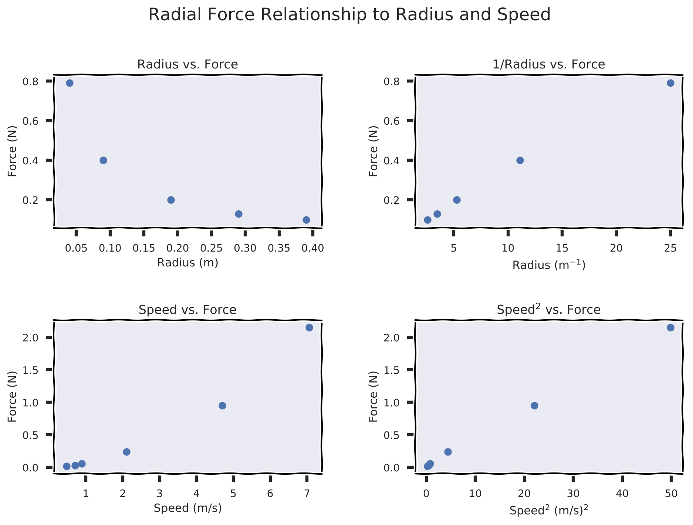
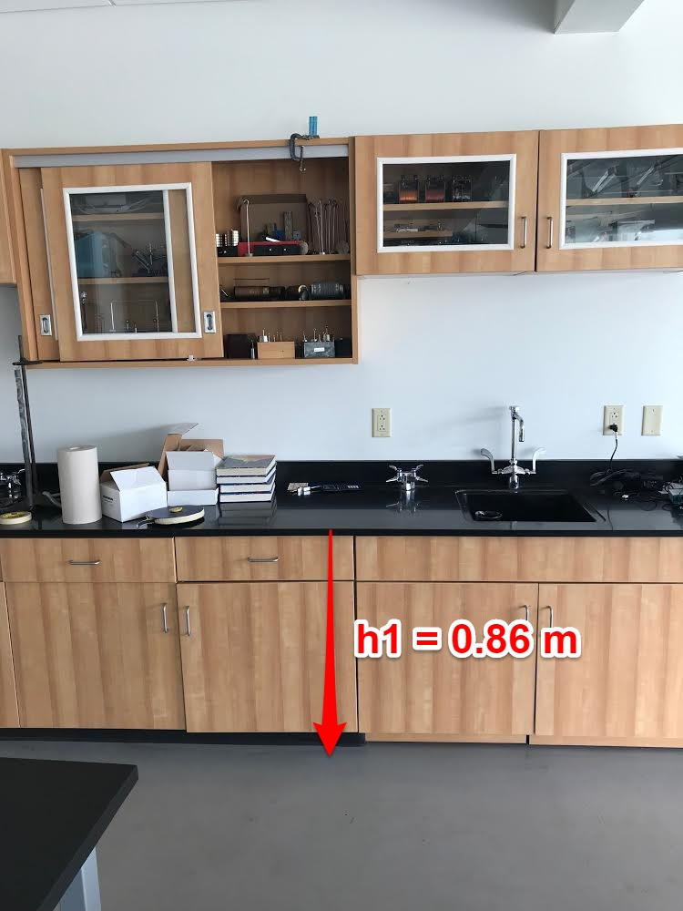
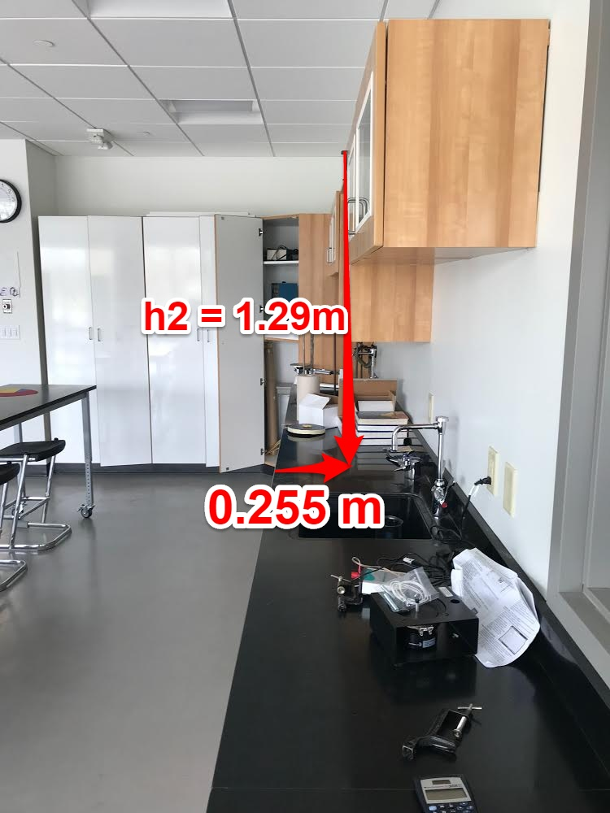

class: center, middle .title[Rotation] .subtitle[A *Model* for Spinning Objects] .author[Nathan Porter] .institution[Maple Hill High School] .coauthor[] .institution[] .date[2018.04.25] .center[] .footnote[Created with [{Remark.js}](http://remarkjs.com/) using [{Markdown}](https://daringfireball.net/projects/markdown/) + [{MathJax}](https://www.mathjax.org/)] --- class:center #Lab Results  .footnote[Data from Ryan M., Lydia C., and Kendall J.] --- #Lab Results: ####How is force related to the radius, mass, and tangential velocity? -- Force is proportional to speed squared $$F_c \propto v^2$$ -- Force is inversely proportional the radius $$F_c\propto \frac{1}{r}$$ -- Force is proportional mass $$F_c \propto m$$ -- Therefore, -- $$F_c = \frac{mv^2}{r}$$ --- #Some Definitions: -- - **Tangential Velocity**: instantaneous, straight line velocity -- - **Centripetal**: center seeking -- - **Centripetal Acceleration**: acceleration of an object moving in a circle -- - **Centripetal Force**: force keeping an object in circular motion --- ###So how do I find Centripetal Acceleration? -- Well, $$a =\frac{\Sigma \vec{F}}{m}$$ -- and the centripetal force is doing the acceleration, $$F_c = ma$$ -- and we know $$F_c = \frac{mv^2}{r}$$ -- so, $$a_c = \frac{v^2}{r}$$ --- class:center ##Centripetal Acceleration with Vectors <img src="https://cnx.org/resources/00522999e2e380cfae74a76c9e78fde4d0d76650/Figure_07_02_01a.jpg" width="300"/> --- class:center ###What keeps the Corgi moving in a circle? <blockquote class="twitter-tweet" data-lang="en"><p lang="en" dir="ltr">These corgis running in circles are a great, simple example of circular motion caused by...! Also, they are corgis running in circles. 😄 <a href="https://twitter.com/hashtag/iteachphysics?src=hash&ref_src=twsrc%5Etfw">#iteachphysics</a> <a href="https://t.co/v4pASTj5Qj">pic.twitter.com/v4pASTj5Qj</a></p>— Matt Blackman (@UniverseAndMore) <a href="https://twitter.com/UniverseAndMore/status/935676417379094528?ref_src=twsrc%5Etfw">November 29, 2017</a></blockquote> --- class:center #Diagrams <img src="https://cnx.org/resources/29d20960146674de13cffa8ad4a2f6cadadd7227/Figure_07_02_02a.jpg" width="200"/> --- class:center #Driving <img src="https://cnx.org/resources/884c7143c34f4b7281a6f101e78516641008f649/Figure_07_03_02a.jpg" width = "400"/> --- class:center #Driving <img src="https://cnx.org/resources/fb1a087c73cb6cc31b52d9df150bab5522549d1b/Figure_07_03_03a.jpg" width = "400"/> --- class:center #Race Cars <img src="https://cnx.org/resources/3ff68aa2520611153f822c827f66714f5ab9ffbe/Figure_07_03_04a.jpg" width = "400"/> --- class:center #Einstein Rides the Gravitron <video preload="auto" width="70%" height="auto" data-setup="{}" autoplay loop controls><source src="https://d32ogoqmya1dw8.cloudfront.net/files/dmvideos/players/einstein_graviton_480p_mp4.mp4" type="video/mp4" /></video> --- .left-column[ ##You can call him 'Al'... - How can we determine the coefficent of static friction between Einstein and the wall? - Write your problem solving process down on your whiteboard - you are not solving the problem, but explaining the steps you would take to solve ####Useful Equations: $$F_c = ma_c =\frac{mv^2}{r}$$ $$|F_f|\leq |\mu F_N|$$ $$\bar{v} = \frac{d}{t}$$ $$F_g = mg$$ ] .right-column[ <video preload="auto" width="95%" height="auto" data-setup="{}" autoplay loop controls><source src="https://d32ogoqmya1dw8.cloudfront.net/files/dmvideos/players/einstein_graviton_480p_mp4.mp4" type="video/mp4" /></video> ] --- ##Al Problem Solving 1. Find the speed when he begins to slip -- 2. Draw a freebody diagram, determine which force is the centripetal force -- 3. We know know that `\(F_c = F_N\)` so `\(F_N = \frac{mv^2}{r}\)` -- 4. We also know that `\(F_f = F_g\)` which is `\(\mu F_N = mg\)` -- 5. Sub and Solve: $$\frac{\mu m v^2}{r} = mg$$ -- $$\mu = \frac{gr}{v^2}$$ --- #What about the spinning object? .right-column[ <video preload="auto" width="95%" height="auto" data-setup="{}" autoplay loop controls><source src="https://d32ogoqmya1dw8.cloudfront.net/files/dmvideos/players/disk_rotates_constant_speed.mp4" type="video/mp4" /></video> ] .left-column[ - What is different about the motion of the dots? - What is similar abouut the motion of the dots? ] --- #Pivot Activity - Superconductor! ###Solve on a whiteboard with your partner. Do not submit anything on Pivot 1. How long will it take for the disk to stop rotating? Use measurements and observations from the video to support your answer. Include any assumptions you made when determining your answer. 2. Although not shown in the video here, the disk will continue to rotate for at least several hours without stopping. Does this match your conclusion? If not, offer an explanation for why. .center[ <img src="../figures/magnet.jpg" width="500"/>] --- #What about the spinning object? .right-column[ <video preload="auto" width="95%" height="auto" data-setup="{}" autoplay loop controls><source src="https://d32ogoqmya1dw8.cloudfront.net/files/dmvideos/players/disk_rotates_constant_speed.mp4" type="video/mp4" /></video> ] .left-column[ - Which dot is moving the *"fastest"*? - Which dot is moving hte *"slowest"*? ] --- #Angular Displacement: - `\(\Delta \theta\)`: change in angle, measured in radians -- - Is equal to the arc length divided by the radius -- $$\Delta \theta = \frac{\Delta s}{r}$$ -- .center[<img src="https://cnx.org/resources/4bf1c18602c765189348b8e90ab8f780d6d2f128/Figure_07_01_01aa.jpg" width ="250"/>] -- - One revolution is equal to `\(2\pi\)` --- #Angular Velocity - Measure of how fast an object is rotating. -- - Symbol: `\(\omega\)` -- - Is equal to the change in angular displacement in a time. -- $$\omega = \frac{\Delta \theta}{\Delta t}$$ -- - measured in rad/s --- ##Angular and Linear Velocity Angular velocity is analogous to linear velocity, and we can determine their relationship. -- $$v = \frac{\Delta s}{\Delta t}$$ -- and $$\Delta \theta = \frac{\Delta s}{t}$$ -- so $$\Delta s = r \Delta \theta$$ -- sub in: $$v = \frac{r\Delta \theta}{\Delta t} = r \omega$$ --- class:middle #$$v = r \omega$$ #$$\omega = \frac{v}{r}$$ --- class: center, middle #Can Spinning things accelerate? -- #YES! --- #Angular Acceleration $$\alpha = \frac{\Delta \omega}{\Delta t}$$ -- - measured in rad/s/s or rad/s<sup>2</sup> --- ##What about a bug on the end of an accelerating wheel? -- - There is linear (or tangential) acceleration -- (ugh Mr. Porter) -- - Derivation aside... $$a_t = r\alpha$$ $$\alpha = \frac{a_t}{r}$$ --- #Rotational Kinematics: The same as linear, but with their rotational twin! .center[ <style type="text/css"> .tg {border-collapse:collapse;border-spacing:0;} .tg td{font-family:Arial, sans-serif;font-size:20px;padding:10px 5px;border-style:solid;border-width:1px;overflow:hidden;word-break:normal;border-color:black;} .tg th{font-family:Arial, sans-serif;font-size:20px;font-weight:normal;padding:10px 5px;border-style:solid;border-width:1px;overflow:hidden;word-break:normal;border-color:black;} </style> <table class="tg"> <tr> <th class="tg-031e">Linear</th> <th class="tg-031e">Angular</th> </tr> <tr> <td class="tg-031e">\(v_x = v_{0x} + a_xt\)</td> <td class="tg-031e">\(\omega = \omega_0 + \alpha t\)</td> </tr> <tr> <td class="tg-031e">\(x = x_0 + v_{0x}t + \frac{1}{2}a_xt^2\)</td> <td class="tg-031e">\(\theta = \theta _0 + \omega_0 t + \frac{1}{2}\alpha t^2\)</td> </tr> <tr> <td class="tg-031e">\(v_x^2 = v_{0x}^2 = 2a_x(x-x_0)\)</td> <td class="tg-031e">\(\omega^2 = \omega_0^2 + 2\alpha(\theta - \theta_0)\)</td> </tr> </table> ] -- How to translate the two (not on the reference table!) .center[ <style type="text/css"> .tg {border-collapse:collapse;border-spacing:0;} .tg td{font-family:Arial, sans-serif;font-size:20px;padding:10px 5px;border-style:solid;border-width:1px;overflow:hidden;word-break:normal;border-color:black;} .tg th{font-family:Arial, sans-serif;font-size:20px;font-weight:normal;padding:10px 5px;border-style:solid;border-width:1px;overflow:hidden;word-break:normal;border-color:black;} </style> <table class="tg"> <tr> <th class="tg-031e">Linear</th> <th class="tg-031e">Angular</th> </tr> <tr> <td class="tg-031e">\(x = \theta r\)</td> <td class="tg-031e">\(\theta = \frac{x}{r}\)</td> </tr> <tr> <td class="tg-031e">\(v = \omega r\)</td> <td class="tg-031e">\(\omega = \frac{v}{r}\)</td> </tr> <tr> <td class="tg-031e">\(a = \alpha r\)</td> <td class="tg-031e">\(\alpha = \frac{a}{r}\)</td> </tr> </table> ] --- class:center, middle <img style="width:100%" src="../figures/anggraphs.png"> --- class:center, middle <iframe src="https://phet.colorado.edu/sims/html/balancing-act/latest/balancing-act_en.html" width="800" height="600" scrolling="no" allowfullscreen></iframe> [Link](https://phet.colorado.edu/sims/html/balancing-act/latest/balancing-act_en.html) --- ##Equilibrium - When there is no Fnet acting on the object. -- - There is no net Torque acting on the object. --- ##Static vs. Dynamic equilibrium -- - Static Equilibrium - angular and linear velocity is 0 -- - Dynamics Equilibrium - angular and linear acceleration are 0 --- ##Torque: - The rotational equivalent of force. Measures the effectiveness of a force changing or accelerating a rotation. "Twisting force" -- - Torque is equal to force applied * lever arm -- - The lever arm is defined as the perpendicular distance from the axis of rotation to the line of action of the force. -- $$\tau = r F \sin \theta$$ -- <img src = "http://hyperphysics.phy-astr.gsu.edu/hbase/imgmec/tordef.gif" width = "700"/> --- class:center, middle <img src="https://cnx.org/resources/ebb24ce66681b9a7f76a16e8b36586e4c9865005/Figure_10_02_01a.jpg" width = "700"/> --- ##AP Question .center[<img src="../figures/torquebalance.jpg" width="500"/>] The figure above shows a uniform meterstick that is set on a fulcrum at its center. A force of magnitude F toward the bottom of the page is exerted on the meterstick at the position shown. At which of the labeled positions must an upward force of magnitude 2F be exerted on the meterstick to keep the meterstick in equilibrium? (A) A (B) B (C) C (D) D ??? Answer: B --- ##Rotational Dynamics: - A net torque results in an angular acceleration. -- - (Just like a net force results in a linear acceleration) -- - Linear acceleration is proportional to net force `\(a \propto F_{net}\)` and inversely proportional to mass `\(a \propto \frac{1}{m}\)` -- - So what do you think angular acceleration is proportional to? (Other than `\(\alpha \propto \tau\)`) -- - What makes it easier to spin something? --- class:center, middle #Demos: ##Twisting a rod: ###Where is it easiest to hold and twist? Why? --- class: center, middle #Demos: ##Falling Mass ###Which apparatus will have a greater angular acceleration? (How can we measure this?) --- ##Moment of Inertia - the rotational analog of mass for linear motion -- - it is related to the mass and the location of the mass -- - for a point like object `\(I = mr^2\)` -- - this relationship is used to build the equations for other moments of inertia --- class:center, middle ##Moments of Intertia <img src="http://hyperphysics.phy-astr.gsu.edu/hbase/imgmec/mic.png" width ="700"/> **You do not need to memorize these! --- ##Rotational Second Law: $$\alpha = \frac{\Sigma \tau}{I}$$ --- .left-column[ .center[<img src="../figures/diskexp.jpg" width="100"/>] A student conducts an experiment to determine the relationship between torque and change in angular velocity. The student uses the apparatus shown in the figure above, consisting of two disks that are glued together and mounted on a horizontal axle. Blocks of varying mass are hung from a string wound around the smaller disk. The blocks are released from rest, exerting different torques on the disks, and are allowed to fall a fixed distance. For each block, the time of fall `\(t\)` and the final angular velocity `\(\omega_f\)` of the disks are measured. There is considerable friction between the disks and the axle. Which of the following best represents a plot that can be obtained from the student's data?] .right-column[ .center[<img src="../figures/diskexpans.jpg" width="550"/>] ] ??? Answer: A --- class: center, middle #Demo ##Spinning Human ###What happens when the person moves their arms closer to their body? --- class:center, middle <img src="https://www.sciencefriday.com/wp-content/uploads/2018/02/Spin_nocredit4.gif" width = "800"/> --- class: center, middle #Demo ##Bicycle Wheel ##What!? --- ##Angular Momentum Linear $$ p = mv$$ -- Angular $$L = I \omega$$ -- - There is angular impulse: `\(\Delta L = \tau \Delta t\)` -- - Angular Mometum is conserved *if there is no net torque* on the system: -- - `\(L_i = L_f\)` or `\(I_i \omega_i = I_f \omega_f\)` --- ##AP Question A disk of known radius and rotational inertia can rotate without friction in a horizontal plane around its fixed central axis. The disk has a cord of negligible mass wrapped around its edge. The disk is initially at rest, and the cord can be pulled to make the disk rotate. Which of the following procedures would best determine the relationship between applied torque and the resulting change in angular momentum of the disk? (A) Pulling the cord, exerting a force of 15 N for 2 s and then 25 N for 3 s, and measuring the final angular velocity of the disk. (B) For five different time intervals, pulling the cord, exerting a force of 15 N, and then measuring the angle through which the disk rotates in each caused (C) For five different time intervals, pulling the cord, exerting a 15 N, and then measuring the final angular velocity of the disk. (D) For five forces of different magnitude, pulling the cord for 5 s, and then measuring the final angular velocity of the disk. ??? Answer: D --- ##AP Question: The wheel on a vehicle has a rotational inertia of 2 kg`\(\cdot\)`m`\(^2\)`. At the instant the wheel has a counterclockwise angular velocity of 6.0 rad/s, an average counterclockwise torque of 5.0 N`\(\cdot\)`m is applied, and continues for 4.0 s. What is the change in angular momentum of the wheel? A. 12 kg`\(\cdot\)`m`\(^2\)`/s B. 16 kg`\(\cdot\)`m`\(^2\)`/s C. 20 kg`\(\cdot\)`m`\(^2\)`/s D. 32 kg`\(\cdot\)`m`\(^2\)`/s ??? Answer: C --- ## AP Question .center[<img src="../figures/angimpulse.jpg" width="200"/>] Steel sphere `\(A\)` of mass `\(M\)` is moving along a horizontal surface with constant speed `\(v\)`. Identical steel sphere `\(B\)` is at rest and hangs on a string of length `\(R\)` attached to a support at point `\(P\)`, as shown in the figure above. The spheres collide, and as a result sphere `\(A\)` stops and sphere `\(B\)` swings a vertical height `(h)` before coming momentarily to rest. Knowing values for which of the following will allow determination of the angular impulse on sphere `\(B\)` with respect to `\(P\)` due to the collision? (A) M and v only (B) M, v, and h (C) R and h (D) R, M, and v ??? Answer: D --- ##AP Question .center[<img src="../figures/clay.jpg" width="150"/>] A system consists of a disk rotating on a frictionless axle and a piece of clay moving toward it, as shown in the figure above. The outside edge of the disk is moving at a linear speed v, and the clay is moving at speed v/2. The clay sticks to the outside edge of the dusk. How does the angular momentum of the system after the clay sticks compare to the angular momentum of the system beofre the clay sticks, and what is the explanation for the comparison? (A) Is is the same because there is no external torque acting on the system. (B) It is greater because the rotating mass increases, which increases the rotational inertia. (C) It is less because the speed of the disk decreases when the clay sticks to it. (D) It is less because the angular momentum of the clay opposes that of the disk. ??? Answer: A --- ## 2017 FRQ Q3A -- 1 point -- Answer- To the right of *C* -- Reasoning- For an explanation that the torque exerted by the disk or the angular momentum of the disk is greater when farther from the pivot -- Example 1- The disk exerts a greater torque on the rod when it pushes the rod farther from the pivot. -- Example 2- The disk has greater angular momentum when it's farther from the pivot. The disk loses almost all its speed during the collision and hence gives the rod almost all its angular momentum. So the rod ends up with more angular momentum when the disk hits it farther from the pivot. --- ## 2017 FRQ Q3B -- 2 Points -- Correct Answer - "Yes" If "No" is selected, the explanation may still earn full credit if an incorrect selection was made in part (a). -- 1 Point - For a selection consistent with the selection from part (a) -- 1 Point - For indicating that the equation shows that `\(\omega\)` increases with increasing `\(x\)` -- Example- According to the equation, `\(\omega\)` increases with `\(x\)`; a bigger `\(x\)` produces a bigger angular speed. This agrees with my reasoning from part (a), where I said a bigger `\(x\)` creates a bigger angular speed after the collision. --- ## 2017 FRQ Q3C -- 3 Points -- 1 Point - For focusing on functional dependence (instead of, for example, considering units/dimensions) -- 1 Point - For addressing `\(m_{disk}\)` , `\(I\)`, or both -- 1 Point - For correctly concluding that the equation is wrong because of the dependence on `\(m_{disk}\)`, `\(I\)`, or both -- Example - If `\(m_{disk}\)` is large, then more angular momentum will be transferred during the collision. But the equation shows the angular speed decreasing with increasing `\(m_{disk}\)`, because it is in the denominator. --- ## 2017 FRQ Q3D 4 Points -- 1 Point - For using an expression of conservation of angular momentum for the disk and rod Note: This point is not awarded for equating angular and linear momentum. -- 1 Point - For indicating that the initial angular momentum of the system is equal to `\(m_{disk}v_0x\)` -- 1 Point - For a dimensionally correct expression for the post-collision angular momentum that includes `\(I\omega\)` -- 1 Point - For indicating the correct rotational inertia of the system after the collision: `\(I + m_{disk}x^2\)` --- ## 2017 FRQ Q3D ###Example By Conservation of Angular Momentum $$L\_{disk\_i} = L\_{disk\_f} + L\_{bar\_f}$$ -- $$m\_{disk}v\_ox = (I\_{disk} + I\_{bar})\omega$$ -- $$m\_{disk}v\_o x = (m\_{disk}x^2+I) \omega$$ -- $$\omega = \frac{m\_{disk}v\_0x}{I + m\_{disk}x^2}$$ --- ## 2017 FRQ Q3E 2 Points -- Correct Answer - Greater than -- 1 Point - For indicating, either directly or by analogy to the linear case, that the disk's angular momentum with respect to the pivot changes more in the bouncy scenario than in the original scenario OR for using a similar argument in terms of impulse Note: This point is for describing what happens to the disk. -- 1 Point - For using conservation of angular momentum or momentum-impulse reasoning to conclude that the rod gains more angular momentum, and hence more angular speed, in the bouncy scenario Note: This point is for describing what happens to the rod. -- Example - After the bouncy collision, the disk has angular momentum in the clockwise direction. To keep the system angular momentum constant, the magnitude of the rod’s counterclockwise angular momentum must be greater than before. --- #Class Practical ##Goal: Determine where the ball will land in refernce to the edge of the lower cabinet on the floor. Use the given information in the diagram below. Ruler is 0.114 m tall. .center[ ] --- #Rotional Energy #$$K = \frac{1}{2}I\omega^2$$ --- class:center, middle <iframe width="560" height="315" src="https://www.youtube.com/embed/x4ySPDvebes?start=118" frameborder="0" allow="autoplay; encrypted-media" allowfullscreen></iframe>